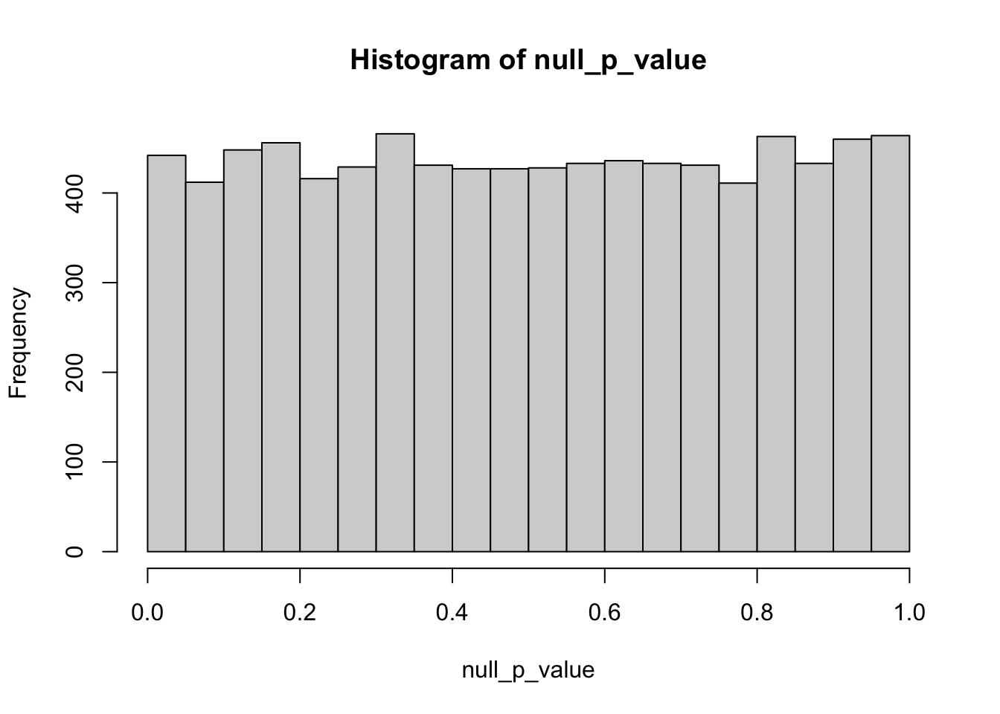
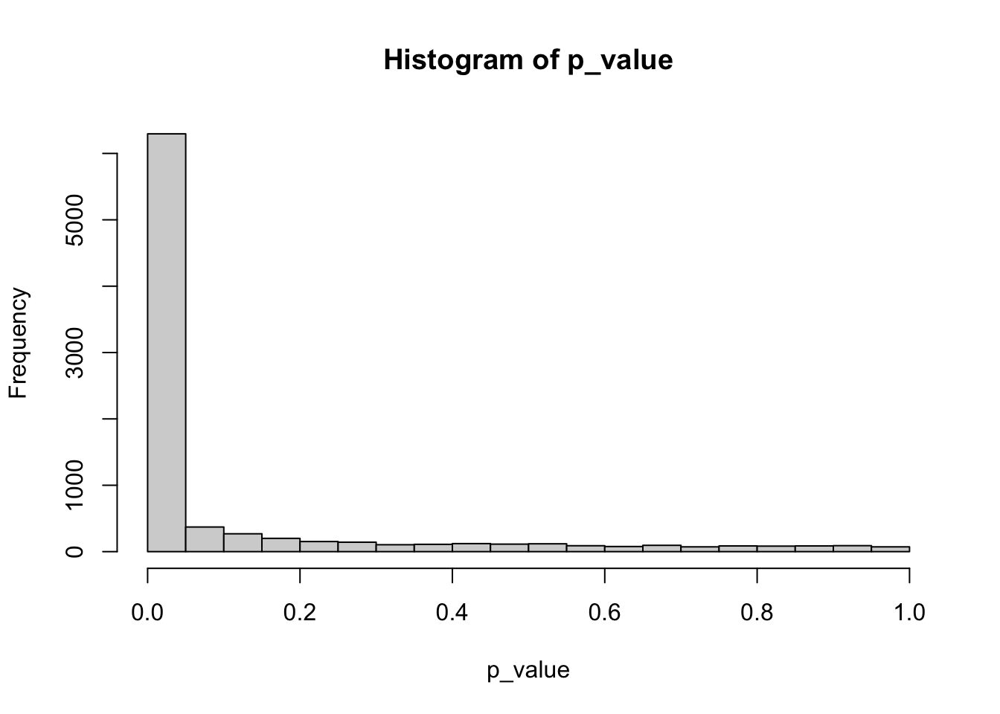
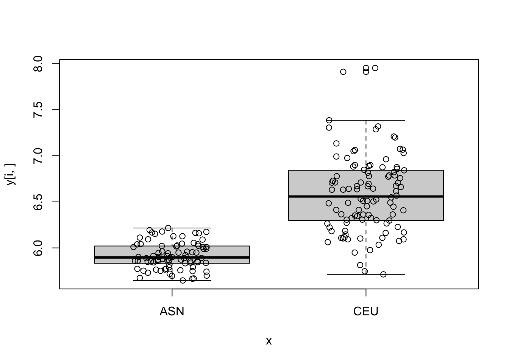
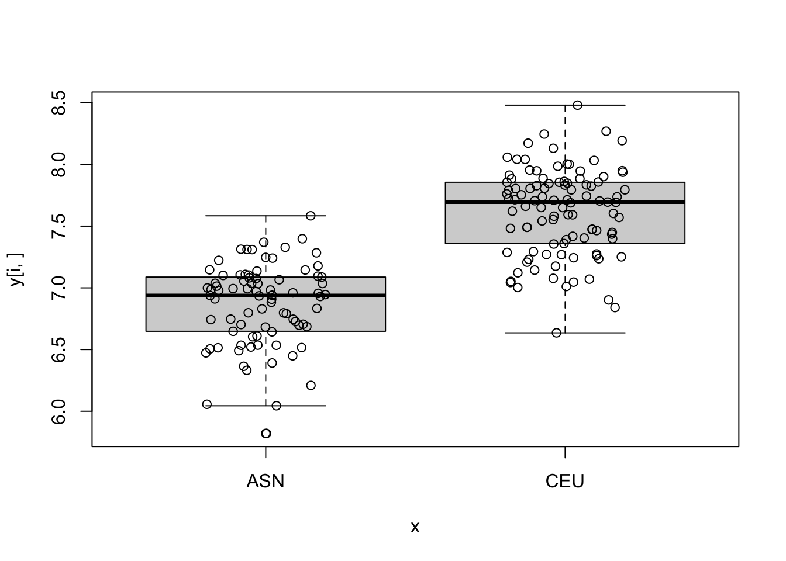
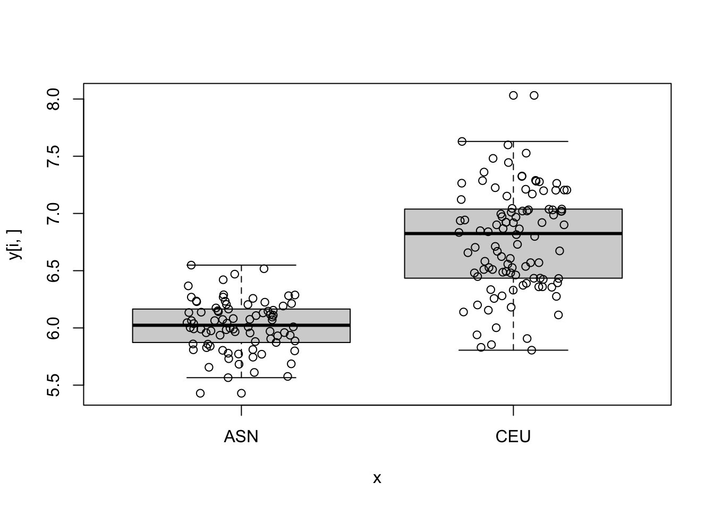
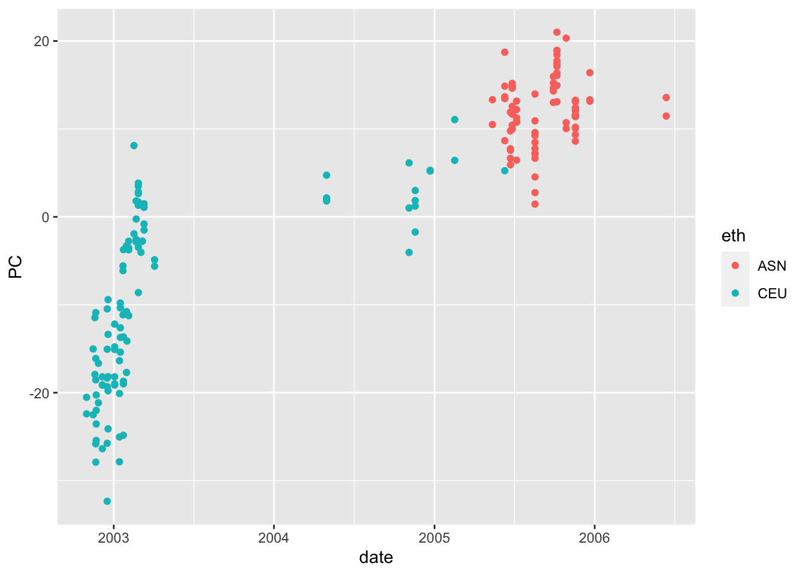

if (!require("BiocManager", quietly = TRUE))
install.packages("BiocManager")
BiocManager::install("Biobase")
if (!require("devtools", quietly = TRUE))
install.packages("devtools")
devtools::install_github("genomicsclass/GSE5859")28 Case Study: Differential expression between ethnicity
Paper here: https://pubmed.ncbi.nlm.nih.gov/17206142/
Variation in DNA sequence contributes to individual differences in quantitative traits, but in humans the specific sequence variants are known for very few traits. We characterized variation in gene expression in cells from individuals belonging to three major population groups. This quantitative phenotype differs significantly between European-derived and Asian-derived populations for 1,097 of 4,197 genes tested. For the phenotypes with the strongest evidence of cis determinants, most of the variation is due to allele frequency differences at cis-linked regulators. The results show that specific genetic variation among populations contributes appreciably to differences in gene expression phenotypes. Populations differ in prevalence of many complex genetic diseases, such as diabetes and cardiovascular disease. As some of these are probably influenced by the level of gene expression, our results suggest that allele frequency differences at regulatory polymorphisms also account for some population differences in prevalence of complex diseases.
library(Biobase)
library(GSE5859)
data(GSE5859)
dim(exprs(e))[1] 8793 208dim(pData(e))[1] 208 3- Described the distribution of ethnic groups
table(pData(e)$ethnicity)
ASN CEU HAN
82 102 24 pData(e) |> dplyr::count(ethnicity) ethnicity n
1 ASN 82
2 CEU 102
3 HAN 24- Create a factor
xwith the ethnic group information and a matrixywith the gene expression matrix.
x <- pData(e)$ethnicity
y <- exprs(e)
y <- y[-grep("AFFX", rownames(y)),] ## remove control genes
d <- lubridate::ymd(pData(e)$date)- Remove the
HANgroup. Make sure you remove from bothxandy
ind <- which(x != "HAN")
x <- x[ind]
x <- droplevels(x)
y <- y[,ind]
d <- d[ind]- Compute a t-test for the first gene comparing
ASNtoCEU.
ind0 <- x == "ASN"
y1 <- y[1,!ind0]
y0 <- y[1, ind0]
tt <- (mean(y1) - mean(y0))/sqrt(sd(y1)^2/length(y1) + sd(y0)^2/length(y0))
2*(1 - pnorm(abs(tt)))[1] 4.80249e-09- Now use rowwise operations to compute t-test for each gene. How many genes have p-values smaller than 0.05 / number of tests?
library(matrixStats) #home of rowVars()
Attaching package: 'matrixStats'The following objects are masked from 'package:Biobase':
anyMissing, rowMediansind0 <- x == "ASN"
y1 <- y[,!ind0]
y0 <- y[,ind0]
m1 <- rowMeans(y1)
m0 <- rowMeans(y0)
v1 <- rowVars(y1)
v0 <- rowVars(y0)
stat <- (m1 - m0)/sqrt(v1/ncol(y1) + v0/ncol(y0))
p_value <- 2*(1 - pnorm(abs(stat)))- If the null hypothesis is true for all genes, and the genes are independent of each other, what distribution do you expect p-values to have? You can use a Monte Carlo.
ind0 <- x == "ASN"
null <- matrix(rnorm(ncol(y)*nrow(y)), nrow(y), ncol(y))
y1 <- null[,!ind0]
y0 <- null[,ind0]
m1 <- rowMeans(y1)
m0 <- rowMeans(y0)
v1 <- rowVars(y1)
v0 <- rowVars(y0)
null_stat <- (m1 - m0)/sqrt(v1/ncol(y1) + v0/ncol(y0))
null_p_value <- 2*(1 - pnorm(abs(null_stat)))
hist(null_p_value)
- Under the null how many p-values smaller than 0.05 do you expect across all genes.
0.05*nrow(y)[1] 437.3sum(null_p_value < 0.05)[1] 473- Make a histogram of the observed p-values.
hist(p_value)
sum(p_value<0.05)[1] 6296- For the top 5 genes with smallest p-values make a boxplot of gene expression by group.
log_p_value <- pnorm(-abs(stat), log.p = TRUE) + log(2)
top_ind <- order(log_p_value)[6:10]
for (i in top_ind) {
boxplot(y[i,]~x)
points(jitter(as.numeric(x)), y[i,])
}




- Compute the first 5 PCs and see how they vary across time.
library(ggplot2)
pca <- prcomp(t(y), center = TRUE, rank. = 5)
## change 1 to other numbers to see other PCs
data.frame(date = d, PC = pca$x[,1], eth = x) |>
ggplot(aes(date, PC, color = eth)) +
geom_point()
- Use the PCs to identified groups other than ethnic group.
g <- factor(lubridate::year(d))- For the top genes, fit a linear model that includes these newly identified groups.
for (i in top_ind) {
print(rownames(y)[i])
fit <- lm(y[i,]~x)
print(summary(fit)$coef[2,])
fit <- lm(y[i,]~x+g)
print(summary(fit)$coef[2,])
}[1] "202100_at"
Estimate Std. Error t value Pr(>|t|)
-7.286322e-01 4.848757e-02 -1.502720e+01 1.027943e-33
Estimate Std. Error t value Pr(>|t|)
-0.1151998 0.1721053 -0.6693565 0.5041354
[1] "220371_s_at"
Estimate Std. Error t value Pr(>|t|)
6.641708e-01 4.796013e-02 1.384839e+01 2.969254e-30
Estimate Std. Error t value Pr(>|t|)
0.1245036 0.1485252 0.8382657 0.4030057
[1] "204826_at"
Estimate Std. Error t value Pr(>|t|)
7.532823e-01 5.079853e-02 1.482882e+01 3.914570e-33
Estimate Std. Error t value Pr(>|t|)
0.1417954 0.1623541 0.8733715 0.3836373
[1] "208104_s_at"
Estimate Std. Error t value Pr(>|t|)
7.452066e-01 5.367906e-02 1.388263e+01 2.354390e-30
Estimate Std. Error t value Pr(>|t|)
0.01811893 0.16958223 0.10684454 0.91503264
[1] "202073_at"
Estimate Std. Error t value Pr(>|t|)
-7.009949e-01 4.855401e-02 -1.443743e+01 5.504128e-32
Estimate Std. Error t value Pr(>|t|)
0.02581273 0.16842121 0.15326295 0.87836452 More here: https://pubmed.ncbi.nlm.nih.gov/17597765/